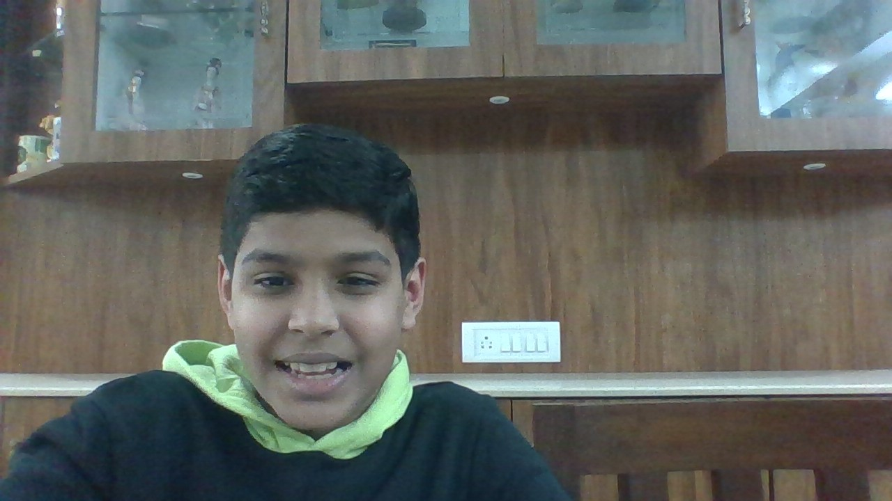
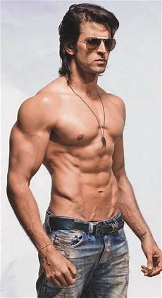

- About Me
- My Favorite Hobby
- My work
- My inspiration
- Contact
About Me
Hello, I am Kartavya Gupta studying in 6th Grade at Oakridge International School, Bachupally. I live in NCL Godavari Homes near Sherwood Public School, Hyderabad. I love playing video games especially the ones in which we have to kill people, basically action games. I also have great interest in Coding, so I have joined WhiteHatJR. Now I am making this website with all the things which I have learnt with WhiteHatJR. Here's my picture.

I am 11 years old, younger brother of Gaurav Gupta (1st year Mechanical Engineering, Vingana Jyothi Institute of Engineering and technology,Bachupally) Son of Ashwani Gupta (Buisnees man, director of Urjas Airtec pvt.ltd, Kalakal, Hyderabad)Son of Anu Gupta (House Wife, Home Tutor). If you have opened this website in 2050 then I am definitely not 11 years old.
My favorite Hobby
My favourite hobby is participating in cycle races, like no the professional ones but the one with my friends. I love doing this because i alays win and if we win we get more respect. Cycling is not only good for our health but also for our image (only in my apartment). We learn more about our cycle and the different features.
My Inspiration
 Hrithik Roshan
Hrithik Roshan is an Indian actor who works in Hindi films. He has portrayed a variety of characters and is known for his dancing skills. One of the highest-paid actors in India, he has won many awards, including six Filmfares, four for Best Actor and one each for Best Debut and Best Actor. Starting in 2012, he appeared several times in Forbes India's Celebrity 100 based on his income and popularity.

Christiano Ronaldo
Cristiano Ronaldo dos Santos Aveiro GOIH ComM is a Portuguese professional footballer who plays as a forward for Serie A club Juventus and captains the Portugal national team. Often considered the best player in the world and widely regarded as one of the greatest players of all time, Ronaldo has won five Ballon d'Or awards and four European Golden Shoes, both of which are records for a European player. He has won 31 major trophies in his career, including seven league titles, five UEFA Champions Leagues, one UEFA European Championship, and one UEFA Nations League title. Ronaldo holds the records for the most goals and assists in the history of the UEFA Champions League. He is one of the few recorded players to have made over 1,000 professional career appearances and has scored over 780 senior career goals for club and country. He is also the second male to score 100 international goals and the first European man to achieve the feat.